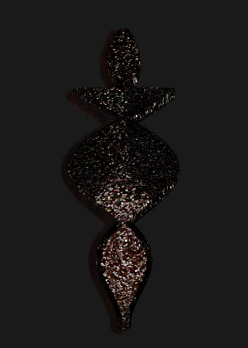
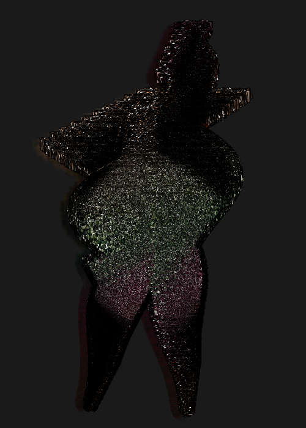

{% include JB/setup %}

<div class="free-page">
<p>Here is my collection of generated art.

Please see my <a href="art/2016/09/14/on-generative-art">essay</a> in the blog too.</p>

<hr/>
<h1>Contour figures</h1>
<p>Drawing something that feels alive and has a human touch to it is natural
to do by hand.  But can that kind of expressiveness and richness of detail
be simulated in generative art – how should we generate
computer images that speak in a cognitively non-obvious way,
figures with aesthetic or emotional appeal?</p>

<p>Can there be authentically erotic, or humorous, or touching
generative art, and by what cost?</p>

<p>These may appear rhetoric or blatant questions, yet they can be answered
well.
Both form and detail have a part in a good answer, I think.</p>

<p><a href="assets/img/art/2016-09-22-21-23-contour-figure-ACU.png">
  
</a></p>
<p class="img-text">Venus of Sine (variation ACU), 2016/09/17.</p>


<p>This is a first one in a series of hominid creatures I did
when the figurative in generative art started to intrigue me.
Body here is shaped by two overlayed sine functions.
Its head is modeled separately.</p>

<p><a href="assets/img/art/2016-09-18-14-32-contour-figure-colossus-AAS.png">
  
</a></p>
<p class="img-text">Colossus with a Hat (variation AAS), 2016/09/18.</p>

<p><a href="assets/img/art/2016-09-18-14-20-contour-figure-tool-AAG.png">
  
</a></p>
<p class="img-text">Tool with Human Head (variation AAG), 2016/09/18.</p>


<hr/>
<h1>Contextual placement</h1>
<p>One thing that comes naturally to the eye is sensing relatively
uniform arrays of things. In cave paintings the figures stand side by side,
distinct from each other, and possessing their own space on the wall.
This kind of uniform randomness is surprisingly difficult to generate
and maintain.</p>

<p><a href="assets/img/art/2016-09-21-22-11-mindist-AAS.png">
  
</a></p>
<p class="img-text">Retro, Retry (variation AAS), 2016/09/21.</p>

<p><a href="assets/img/art/2016-09-19-22-33-autumn-day-ABY.png">
  
</a></p>
<p class="img-text">Autumn Day (variation ABY), 2016/09/19.</p>


</div>
